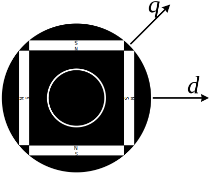

永磁同步电机初始角自学习
创建于2021-3-30
该项目完成于2015-10，原创
该项目完成于2015-10，原创
转子初始位置判断是永磁同步电机控制中很重要的一个环节。在永磁同步电机闭环控制（带编码器的矢量控制）中，只有已知初始角才能根据编码器反馈信号获得准确的电机位置信息。在永磁同步电机无传感器控制中，初始位置的判断同样十分重要，初始位置不准确会使电机无法以最大转矩启动，若位置误差过大，甚至会导致启动失败。对于凸极式永磁同步电机，可以根据dq轴电感的不同来判断初始磁链位置，对于隐极式永磁同步电机，则可以使磁路饱和产生“凸极”来进行判断。总之，就是可以根据“凸极效应”来获得电机初始角度。
一般来说，凸极式永磁同步电机d轴电感要小于q轴电感，也就是Ld<Lq，隐极式永磁同步电机在磁路饱和时，d轴电感也小于q轴电感，现有的方法大多根据永磁同步电机的这个特性，来判断转子初始位置。

某些特殊结构的电机，d轴电感要大于q轴电感，甚至在磁路饱和情况下也是这样，这样以来很多方法就不再适用，需要开发新的方法。
针对以上情况，开发了两种永磁同步电机初始角自学习方法，很好地满足了不同场合的使用需求。